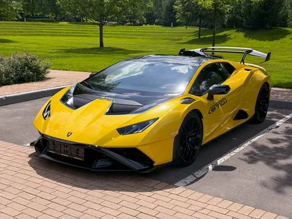
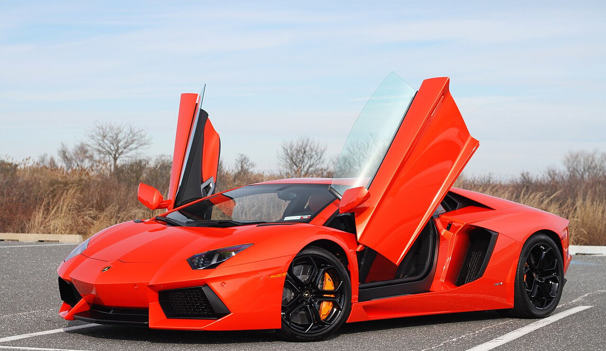
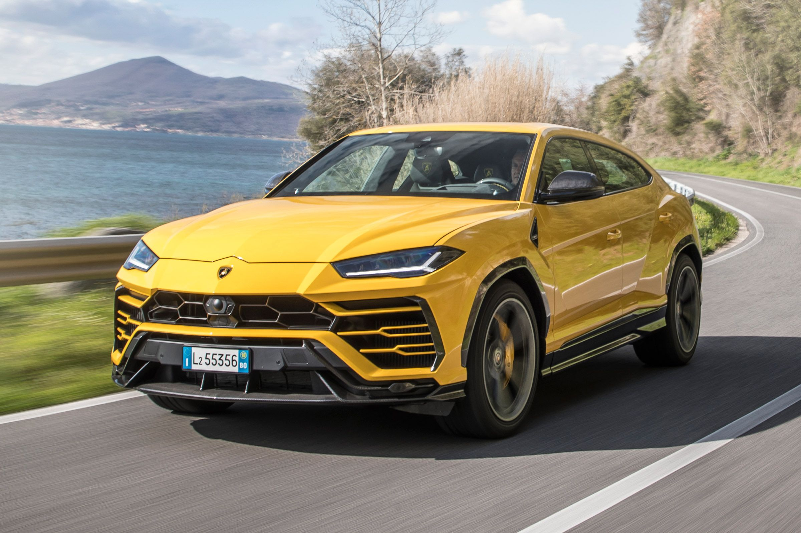

Индивидуальное задание · Вариант 13

Lamborghini Huracán — преемник легендарного Gallardo, представленный на Женевском автосалоне. Оснащён атмосферным двигателем V10 объёмом 5.2 литра.
Разгон до 100 км/ч: 3.2 секунды
Максимальная скорость: 325 км/ч
Двигатель: 5.2 л V10, бензиновый
Huracán — это не просто машина, это эмоция. Каждое нажатие педали газа вызывает мурашки.

Lamborghini Aventador — флагманская модель, представленная . Оснащён двигателем V12 объёмом 6.5 литра и полным приводом.
Разгон до 100 км/ч: 2.9 секунды
Максимальная скорость: 350 км/ч
Двигатель: 6.5 л V12, бензиновый
Aventador — это последний из могикан: атмосферный V12, который больше никогда не повторится.

Lamborghini Urus — первый кроссовер в истории марки, представленный . Оснащён 4.0-литровым битурбированным V8.
Разгон до 100 км/ч: 3.6 секунды
Максимальная скорость: 305 км/ч
Двигатель: 4.0 л V8 Twin-Turbo, бензиновый
Urus доказывает, что семейный автомобиль может быть быстрее большинства спорткаров.
| Характеристика | Huracán | Aventador | Urus |
|---|---|---|---|
| Тип двигателя | Бензиновый V10 | Бензиновый V12 | Бензиновый V8 Twin-Turbo |
| Расход топлива | 13.7 л / 100 км | 16.5 л / 100 км | 12.7 л / 100 км |
| Тип КПП | Роботизированная | Роботизированная | Автоматическая |
| Количество передач | 7 | 7 | 8 |
| Габариты (Д×Ш×В), мм | 4520 × 1933 × 1165 | 4780 × 2030 × 1136 | 5112 × 2016 × 1638 |
| Объём багажника | 100 л | 150 л | 616 л |
| Разгон до 100 км/ч | 3.2 с | 2.9 с | 3.6 с |
| Максимальная скорость | 325 км/ч | 350 км/ч | 305 км/ч |
| Начальная цена | ≈ 240 000 € | ≈ 380 000 € | ≈ 200 000 € |
| Wi-Fi / Bluetooth | Есть / Есть | Есть / Есть | Есть / Есть |
| Тормозная система | Дисковые (карбон-керамика) | Дисковые (карбон-керамика) | Дисковые вентилируемые |
| Система предотвращения столкновений | Есть | Есть | Есть |
| Гарантия | 3 года | 3 года | 3 года |
| Рейтинг Euro NCAP | 85 / 100 | 80 / 100 | 90 / 100 |